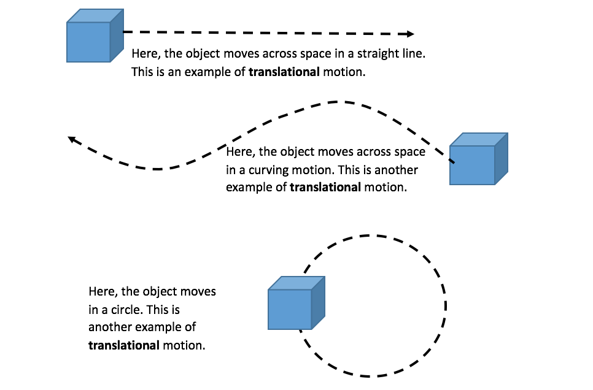
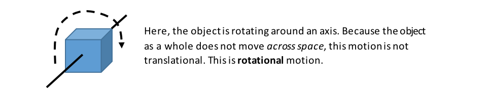
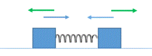
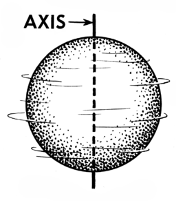

You can search below or click on a science
area to find information for your research question:
Kinetic and Potential Energy
What is Energy? Energy in general is a measure of the motion of objects.
There are two general categories of energy that objects may have: Kinetic energy and
Potential energy.
Kinetic energy is the energy of an object due to its motion. The faster an object is moving, the more
kinetic energy it has. For example, an electron that is moving faster has more kinetic energy than a
slower-moving electron.
Potential energy is related to the amount of motion an object can have (in the future) because it is being acted on by
a net force. (If you don't know what "net force" means, click here.)
For example, electrons are pulled by protons toward the nucleus of atoms. Because of this,
electrons have the "potential" to move even faster.
Types of Kinetic Energy
Kinetic energy is the energy of an object (including atoms and molecules!) that is due to the object’s
motion. Because there are different types of motion, there are different types of kinetic energy.
When people use the term "kinetic energy," they are most likely referring to the translational kinetic
energy of an object. The translational kinetic energy of an object is the kinetic energy of the object
due to the object as a whole moving across some distance.
The (translational) Kinetic energy of an object is proportional to its mass and the square of
its speed (or velocity). Specifically:
KE = ½m*v2
In these units, if we say "kinetic energy," we mean "translational kinetic energy." If we mean another type
of kinetic energy, we will say what that other kind of kinetic energy is (e.g., "rotational kinetic energy").
Below are some examples of translational motion, where the object as a whole moves across a distance:

In each case, the (translational) kinetic energy of the object can be calculated from its mass and its speed/velocity (KE = ½m*v2).
Other types of kinetic energy
A second type of kinetic energy is kinetic energy due to rotational motion, where an object rotates on an axis. An example of this is the Earth rotating on its axis, causing
day and night. This type of motion is shown below:

A final type of kinetic energy is kinetic energy due to vibrational motion. For this type of motion,
again the object as a whole does not move through space. Instead, it moves kind of like an accordion. A
person playing an accordion can stand still while playing it because it has no translational motion.
An example of vibrational motion is shown below.

In the example above, the "object" is composed of two boxes and a spring between them. The boxes both move
away from each other, then back toward each other (like the accordion). But the middle of the spring (the
"center of mass") does not move in space.
Carbon dioxide is one molecule that absorbs energy from sunlight, which is converted into vibrational motion
of the molecules.
Types of kinetic energy: Understanding Check...
((Advanced: Due to new (probably unfamiliar) terminology))
Rotational kinetic energy (KE): As we said before, an object can have other types of kinetic energy besides
translational KE. Rotational kinetic energy is the energy due to the object spinning around an
axis (including rolling on the ground).

In general, rotational
KE = ½I • ω2
. (This looks similar to
KE = ½m • v2
, right?) I is like the mass of the object, but it’s the resistance of the object’s mass to
rotational motion (rather than translational motion). And ω is the rotational speed of
the object or how fast the object rotates on its axis (rather than translational speed).
If a solid ball is rolling across a surface, it will have BOTH translational KE and
rotational KE. Again, the rotational KE is in general equal to: ½ I • ω2.
For a solid sphere, I = (2/5)m • r2 (you
need to look up values of I for different shapes of objects)
This relationship indicates that I, the resistance to spinning, increases with both the mass (m)
of the sphere and with the square of the radius of the sphere. (So, smaller spheres resist
spinning less than larger spheres, which is intuitive, right?)
ω is related to the translational speed of the sphere (if it is rolling without slipping on
the surface at all) as follows: ω = v/r.
This is because when an object rolls one revolution, or 360 degrees — which is equal to 2
π radians (trust us for now) — it will
travel a distance equal to the circumference of the sphere, 2
πr (where r is the radius of the
sphere) or πd(where d is the
diameter of the sphere).
So,
KER = (2/5) m • r2 × (v/r)2→
the r’s will cancel out, so we get for the rotational KE of a sphere:
KER = 2/5 m • v2
((End of advanced section))
Potential energy is the potential for an object to move faster (or accelerate) because a
net force
is acting on the object. For example, an object such as a rock at the top of a
cliff (right before it starts to fall) has potential energy because the downward force of gravity will make it
fall (and gain a lot of kinetic energy,
if it's high enough!).
The potential energy of an object due to gravity (when no other forces act on the object) depends on three
variables:
the mass of the object (m)
the acceleration due to gravity (g) (on Earth, g is about 10 m/s2),
and its height above the ground (h).
As each of these variables increases, the potential energy of the object increases. This is shown in the
equation below:
The potential energy of an object (due to gravity) = m x g x h